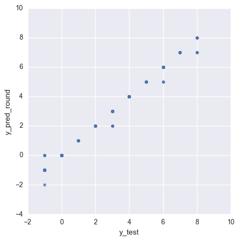

Predicting West Nile Outbreak in Chicago
GOALS:
- Predicting mosquito breeding.
- Predicting mosquito migration.
- Factor in spraying
- Predicting the effect of spraying locations.
- Predicting probability of westnile postive.
Process/Methods: 1. Clean weather data. - Calculate features. 2. Stagger weather data. 3. Incorporate spray data. 4. Weight by distance. - Extract zip codes from data. 5. Account for row leakage.
METHODS TO TRY:
1. Predicting number of mosquitos. Fit by month?
2. Predicting where sprays happened. Assign sprays effect to specific traps.
3. Optimize decision tree model with manual encoding of labels. (A method that labels categorical variables by the order of the variable likelihood.)
Features to Consider:
1. Plot the increase in mosquito population from wind speed to get the likelihood that mosquitos will migrate towards wind directions.
2. See also if the wind affects if mosquitos are congregating or avoiding the spraying done by Chicago.
Check correlations of features to NumMosquitos feature
#Computation
import numpy as np
import pandas as pd
import re
import math
#Geographic Distance
from haversine import haversine
#Visualization
import seaborn as sns
import matplotlib.pyplot as plt
%matplotlib inline
#Modeling
import hdbscan
from sklearn.preprocessing import LabelEncoder
from sklearn.ensemble import GradientBoostingClassifier, GradientBoostingRegressor, RandomForestClassifier
from sklearn.cross_validation import train_test_split
from sklearn.cross_validation import cross_val_score
from sklearn.metrics import accuracy_score, precision_score, confusion_matrix, classification_report
from sklearn.grid_search import GridSearchCV
from sklearn import ensemble, preprocessing
#Function to format the date columns.
def extract_date_data(data, date_column_name):
#df = pd.DataFrame(train_raw)
data[date_column_name] = pd.to_datetime(data[date_column_name])
data['Year'] = data[date_column_name].dt.year
data['Month'] = data[date_column_name].dt.month
data['Day'] = data[date_column_name].dt.day
data['Weekday'] = data[date_column_name].dt.weekday
#data.drop(date_column_name, axis=1, inplace=True)
return data
#Function to format the weather dataframe:
def weather_format(weather):
#Replace some missing values.
weather = weather.replace('[\MT-]', np.nan, regex=True)
weather['day_len'] = weather['Sunset'].astype(float) - weather['Sunrise'].astype(float)
weather['tem_range'] = weather['Tmax'] - weather['Tmin']
weather['dew_len'] = weather['DewPoint'] - weather['Tmin']
#Dropping columns that we won't use in the weather section.
weather.drop(['Sunset', 'Sunrise', 'Tmax', 'Tmin', 'DewPoint',
'WetBulb', 'Water1', 'SnowFall', 'CodeSum', 'Heat',
'Cool', 'StnPressure', 'ResultSpeed', 'Depth', 'SeaLevel',
'Year', 'Month', 'Day', 'Weekday'], axis=1, inplace=True)
#Fill in missing data for sunrise and sunset since station 2 didn't have it.
weather['day_len'].fillna(weather.groupby('Date')['day_len'].transform('mean'), inplace=True)
#assign latitude longitude to each weather station.
weather['Latitude'] = weather['Station'].map({1:41.995, 2:41.786})
weather['Longitude'] = weather['Station'].map({1:-87.933, 2:-87.752})
return weather
#Function to assign the nearest weather station to each trap.
def assign_station(train):
#create a reference data frame for each station.
d = {0: [41.995,41.786], 1: [-87.933, -87.752]}
station_df = pd.DataFrame.from_dict(data=d, orient='index')
station_df.rename(columns={0:'Station1', 1:'Station2'})
#Function to find the distance from every trap to station 1 and station 2
df5_station = pd.DataFrame(columns=[station_df.columns])
for i in station_df.columns:
HOLDER = []
for x, y in enumerate(train['Latitude']):
STATION = (station_df[i].loc[0], station_df[i].loc[1])
TRAP = (y, train['Longitude'].loc[x])
HOLDER.append(haversine(STATION, TRAP, miles=True))
df5_station[i] = HOLDER
#Function to assign the closest station into a new variable and then add that variable as a column to df_train.
station = []
for i in df5_station.index:
station.append(df5_station.loc[i].idxmin())
train['station'] = station
return train
#Function to create calculate mosquito breeding features from weather data.
def breeding_date(weather, train, test):
#Create a duplicate date column we will reference as a breeding date later.
weather['breeding_date'] = weather['Date']
#Create a breeding date to merge the some weather information to it.
train['breeding_date'] = train['Date'].apply(lambda x: x - pd.DateOffset(days=15))
test['breeding_date'] = test['Date'].apply(lambda x: x - pd.DateOffset(days=15))
def weather_breeding_features(weather, df):
#Split the weather dataframe by station.
station_1 = weather[weather['Station'] == 1].copy()
station_2 = weather[weather['Station'] == 2].copy()
#Trying to factor in the relative speed of incubation based upon the average temperature during that period.
station_1['temp_mean'] = station_1['Tavg'].rolling(window=15).mean()
station_2['temp_mean'] = station_2['Tavg'].rolling(window=15).mean()
#Trying to factor in the relative dew_point for bitting liklihood.
station_1['dew_mean'] = station_1['dew_len'].rolling(window=5).mean()
station_2['dew_mean'] = station_2['dew_len'].rolling(window=5).mean()
#merge with train/test on a date that is staggerd by 15 days.
station_1['preci_weighted'] = station_1['PrecipTotal'].ewm(span=2, min_periods=5, ignore_na=True).mean()
station_2['preci_weighted'] = station_2['PrecipTotal'].ewm(span=2, min_periods=5, ignore_na=True).mean()
#Dataframes for train.
df_station1 = df[df['station'] == 0].copy()
df_station2 = df[df['station'] == 1].copy()
# Merge with weather data for station 1.
df_station1 = df_station1.merge(station_1[['Date', 'Tavg', 'PrecipTotal', 'day_len', 'tem_range', 'dew_len', 'temp_mean', 'dew_mean']], on='Date')
# Merge with breeding weather data for station 1.
df_station1 = df_station1.merge(station_1[['breeding_date', 'preci_weighted']], on='breeding_date')
#Merge with the weather data for station 2.
df_station2 = df_station2.merge(station_2[['Date', 'Tavg', 'PrecipTotal', 'day_len', 'tem_range', 'dew_len', 'temp_mean', 'dew_mean']], on='Date')
#Merge with the breeding weather data for station 2.
df_station2 = df_station2.merge(station_2[['breeding_date', 'preci_weighted']], on='breeding_date')
#Putting the dataframes back together again with the new data included.
df = df_station1.append(df_station2)
return df
#As seen here: https://gist.github.com/jeromer/2005586
def calculate_initial_compass_bearing(pointA, pointB):
"""
Calculates the bearing between two points.
The formulae used is the following:
θ = atan2(sin(Δlong).cos(lat2),
cos(lat1).sin(lat2) − sin(lat1).cos(lat2).cos(Δlong))
:Parameters:
- `pointA: The tuple representing the latitude/longitude for the
first point. Latitude and longitude must be in decimal degrees
- `pointB: The tuple representing the latitude/longitude for the
second point. Latitude and longitude must be in decimal degrees
:Returns:
The bearing in degrees
:Returns Type:
float
"""
if (type(pointA) != tuple) or (type(pointB) != tuple):
raise TypeError("Only tuples are supported as arguments")
lat1 = math.radians(pointA[0])
lat2 = math.radians(pointB[0])
diffLong = math.radians(pointB[1] - pointA[1])
x = math.sin(diffLong) * math.cos(lat2)
y = math.cos(lat1) * math.sin(lat2) - (math.sin(lat1)
* math.cos(lat2) * math.cos(diffLong))
initial_bearing = math.atan2(x, y)
# Now we have the initial bearing but math.atan2 return values
# from -180° to + 180° which is not what we want for a compass bearing
# The solution is to normalize the initial bearing as shown below
initial_bearing = math.degrees(initial_bearing)
compass_bearing = (initial_bearing + 360) % 360
return compass_bearing
def HDBSCAN(df):
df_spray = df[['Latitude', 'Longitude']].copy()
#Instantiate the model and declare the min_sample size.
clusterer = hdbscan.HDBSCAN(min_samples=12)
#Fit to the target dataframe.
clusterer.fit(df_spray)
#Add a new column to the spray_raw dataframe that assigns each spray location to a zone.
df['zone'] = clusterer.labels_
def spray_zone_labels(month_df, train):
#Simplify the spray data so that we can get some more distinguishable clusters.
month_df['Latitude'] = [round(i, 3) for i in month_df['Latitude']]
month_df['Longitude'] = [round(i, 3) for i in month_df['Longitude']]
month_df = month_df[['Latitude', 'Longitude']].drop_duplicates()
#Add a trap column so that we can filter out the spray cluster data.
month_df['Trap'] = -1
#Add in the train data and append the two sets together.
traps = train[['Latitude', 'Longitude', 'Trap']].copy().drop_duplicates()
cluster_set = month_df.append(traps)
#Set the target variables for HDBSCAN
cluster_set1 = cluster_set[['Latitude', 'Longitude']].copy()
#Instantiate the model and declare the min_sample size.
clusterer = hdbscan.HDBSCAN(min_samples=50)
#Fit to the target dataframe.
clusterer.fit(cluster_set1)
#Add a new column to the spray_raw dataframe that assigns each spray location to a zone.
cluster_set['zone'] = clusterer.labels_
#Extract the labels for traps.
return cluster_set
def visualize_clusters(cluster_test_spray, cluster_test_trap):
mapdata = np.loadtxt("assets/mapdata_copyright_openstreetmap_contributors.txt")
#Create the color range for each of the 40 labels.
color = [str(item/6.) for item in cluster_test_spray['zone']]
color1 = [str(item/6.) for item in cluster_test_trap['zone']]
plt.figure(figsize=(8,12))
lon_lat_box = (-88, -87.5, 41.6, 42.1)
aspect = mapdata.shape[0] * 1.0 / mapdata.shape[1]
plt.imshow(mapdata, cmap=plt.get_cmap('gray'), extent=lon_lat_box, aspect=aspect)
locations = cluster_test_spray[['Longitude', 'Latitude']].values
traps = cluster_test_trap[['Longitude', 'Latitude']].values
plt.scatter(locations[:,0], locations[:,1], marker='_', c=color, s=17, cmap='Set1')
plt.scatter(traps[:,0], traps[:,1], marker='o', c=color1, s=17, cmap='Set1')
plt.show()
#Generate Ullam Pattern reference
reference = list(range(1,100))
move_left = 0.002
move_right = -0.002
stay = 0.0
pattern_long = []
alternator = 1
for i in reference:
holder = []
if alternator > 0:
for x in range(0,i):
holder.append(move_right)
alternator = 0
else:
for x in range(0,i):
holder.append(move_left)
alternator = 1
for x in range(0,i):
holder.append(stay)
pattern_long = pattern_long + holder
reference = list(range(1,100))
move_left = 0.002
move_right = -0.002
stay = 0.0
pattern_lat = []
alternator = 1
for i in reference:
holder = []
for x in range(0,i):
holder.append(stay)
if alternator > 0:
for x in range(0,i):
holder.append(move_left)
alternator = 0
else:
for x in range(0,i):
holder.append(move_right)
alternator = 1
pattern_lat = pattern_lat + holder
Import the data
#Import data sets and format date columns.
train_raw = extract_date_data(pd.read_csv('assets/0_train.csv'), 'Date')
test_raw = extract_date_data(pd.read_csv('assets/0_test.csv'), 'Date')
spray_raw = extract_date_data(pd.read_csv('assets/0_spray.csv'), 'Date')
weather_raw = extract_date_data(pd.read_csv('assets/0_weather.csv'), 'Date')
#Format the weather table to the features we want.
weather_raw = weather_format(weather_raw)
#Assign a weather station to each trap
train_raw = assign_station(train_raw)
test_raw = assign_station(test_raw)
Incorporate the weather data and breeding features
#Create the breeding date for each of the datasets.
breeding_date(weather_raw, train_raw, test_raw)
#Include the weather features into the data sets.
train_raw = weather_breeding_features(weather_raw, train_raw)
test_raw = weather_breeding_features(weather_raw, test_raw)
Incorporating the Spray Data
DBSCAN and other clustering methods won't work for getting a good sense of spraying effect on trap locations. This is because there is a LARGE varying density of spraying zones and regular clustering techniques don't take this into consideration when building clusters.
So below I am using HDBSCAN. One nice benefit is that it won't add every spray location to a zone and thereby unnecessarily taint the clusters.
spray_raw = spray_raw[spray_raw['Latitude'] < 42.1]
#Split the clusters up into 3 dataframes so we can make clusters based on the time of the spray.
df_july = spray_raw[spray_raw['Month'] == 7]
df_august = spray_raw[spray_raw['Month'] == 8]
df_september_13 = spray_raw[(spray_raw['Month'] == 9) & (spray_raw['Year'] == 2013)]
#Get the labels for july 2013.
july_cluster = spray_zone_labels(df_july, train_raw)
july_cluster_spray = july_cluster[july_cluster['Trap'] < 0]
july_cluster_trap = july_cluster[july_cluster['Trap'] > 0]
#Get the labels for august 2013.
august_cluster = spray_zone_labels(df_august, train_raw)
august_cluster_spray = august_cluster[august_cluster['Trap'] < 0]
august_cluster_trap = august_cluster[august_cluster['Trap'] > 0]
#Get the labels for september 2013.
september_cluster = spray_zone_labels(df_september_13, train_raw)
september_cluster_spray = september_cluster[september_cluster['Trap'] < 0]
september_cluster_trap = september_cluster[september_cluster['Trap'] > 0]
#Fixing some of the september labels manually.
september_cluster_trap.replace(0,-1, inplace=True)
/Users/nathanhall/anaconda2/lib/python2.7/site-packages/ipykernel/__main__.py:3: SettingWithCopyWarning:
A value is trying to be set on a copy of a slice from a DataFrame.
Try using .loc[row_indexer,col_indexer] = value instead
See the caveats in the documentation: http://pandas.pydata.org/pandas-docs/stable/indexing.html#indexing-view-versus-copy
app.launch_new_instance()
/Users/nathanhall/anaconda2/lib/python2.7/site-packages/ipykernel/__main__.py:4: SettingWithCopyWarning:
A value is trying to be set on a copy of a slice from a DataFrame.
Try using .loc[row_indexer,col_indexer] = value instead
See the caveats in the documentation: http://pandas.pydata.org/pandas-docs/stable/indexing.html#indexing-view-versus-copy
/Users/nathanhall/anaconda2/lib/python2.7/site-packages/ipykernel/__main__.py:16: SettingWithCopyWarning:
A value is trying to be set on a copy of a slice from a DataFrame
See the caveats in the documentation: http://pandas.pydata.org/pandas-docs/stable/indexing.html#indexing-view-versus-copy
#Look into finding clusters by adding a point for every mosquito in a trap in a stacked circumference by
#manually manipulating the longitude and lattitude of the data.
#If the wind is in play. Then manipulate the location of the clusters accordingly.
visualize_clusters(july_cluster_spray, july_cluster_trap)
visualize_clusters(august_cluster_spray, august_cluster_trap)
visualize_clusters(september_cluster_spray, september_cluster_trap)
#Manually adjust the 0's here to be -1's.
#sns.lmplot(x='Longitude', y='Latitude', hue='zone', fit_reg=False, data=september_cluster_trap)
#Manually make labels that can be sequential with the numbers we have for July.
august_cluster_trap['zone'].replace({-1:-1, 0:3, 1:4, 2:5, 3:6, 4:7, 5:8}, inplace=True)
september_cluster_trap['zone'].replace({-1:-1, 1:9}, inplace=True)
/Users/nathanhall/anaconda2/lib/python2.7/site-packages/pandas/core/generic.py:3443: SettingWithCopyWarning:
A value is trying to be set on a copy of a slice from a DataFrame
See the caveats in the documentation: http://pandas.pydata.org/pandas-docs/stable/indexing.html#indexing-view-versus-copy
self._update_inplace(new_data)
#Create dictionaries for each month that we can then apply to the month columns in 2013.
july_dict = july_cluster_trap.set_index('Trap').to_dict()['zone']
august_dict = august_cluster_trap.set_index('Trap').to_dict()['zone']
september_dict = september_cluster_trap.set_index('Trap').to_dict()['zone']
#Get only the 2013 data from train that we can fit to for each month. We will put each month back together after
#we apply the above dictionaries.
spray_df_2013 = train_raw[train_raw['Year']==2013].copy()
#June
spray_df_june = spray_df_2013[spray_df_2013['Month']==6].copy()
#July
spray_df_july = spray_df_2013[spray_df_2013['Month']==7].copy()
#August
spray_df_august = spray_df_2013[spray_df_2013['Month']==8].copy()
#September
spray_df_september = spray_df_2013[spray_df_2013['Month']==9].copy()
#Map the dictionaries to each dataframe. Fill all of june with -1 since that corresponds to not being in a spray zone.
spray_df_june['spray_zone'] = -1
spray_df_july['spray_zone'] = spray_df_july['Trap'].map(july_dict)
spray_df_august['spray_zone'] = spray_df_august['Trap'].map(august_dict)
spray_df_september['spray_zone'] = spray_df_september['Trap'].map(september_dict)
spray_df_2013 = spray_df_june.append([spray_df_july, spray_df_august,spray_df_september])
#Python code for computing euler spiral. Taken from here: http://digitalassets.lib.berkeley.edu/techreports/ucb/text/EECS-2009-162.pdf
def fit_euler(th0, th1):
k1_old = 0
e_old = th1 - th0
k0 = th0 + th1
k1 = 6 * (1 - ((.5 / pi) * k0) ** 3) * e_old
for i in range(10):
x, y = spiro(k0, k1, 0, 0)
e = (th1 - th0) + 2 * atan2(y, x) - .25 * k1
if abs(e) 1e-9: break
k1_old, e_old, k1 = k1, e, k1 + (k1_old - k1) * e / (e - e_old)
return k0, k1
File "<ipython-input-28-39ad59be0e90>", line 10
if abs(e) 1e-9: break
^
SyntaxError: invalid syntax
cluster_aug = spray_df_august.groupby(['Trap', 'Latitude', 'Longitude']).sum().reset_index()
df_mosquitos_august = pd.DataFrame(columns=['Latitude', 'Longitude'])
for x,y in enumerate(cluster_aug['Latitude']):
df_holder = pd.DataFrame(columns=['Latitude', 'Longitude'])
start = y
lat = []
for z in range(1,cluster_aug['NumMosquitos'].loc[x]):
move = start + pattern_lat[z]
lat.append(move)
start = move
df_holder['Latitude'] = lat
start1 = cluster_aug['Longitude'].loc[x]
log1 = []
for w in range(1,cluster_aug['NumMosquitos'].loc[x]):
move1 = start1 + pattern_long[w]
log1.append(move1)
start1 = move1
df_holder['Longitude'] = log1
df_mosquitos_august = df_mosquitos_august.append(df_holder)
cluster_new = spray_df_september.groupby(['Trap', 'Latitude', 'Longitude']).sum().reset_index()
df_mosquitos_september = pd.DataFrame(columns=['Latitude', 'Longitude'])
for x,y in enumerate(cluster_new['Latitude']):
df_holder = pd.DataFrame(columns=['Latitude', 'Longitude'])
start = y
lat = []
for z in range(1,cluster_new['NumMosquitos'].loc[x]):
move = start + pattern_lat[z]
lat.append(move)
start = move
df_holder['Latitude'] = lat
start1 = cluster_new['Longitude'].loc[x]
log1 = []
for w in range(1,cluster_new['NumMosquitos'].loc[x]):
move1 = start1 + pattern_long[w]
log1.append(move1)
start1 = move1
df_holder['Longitude'] = log1
df_mosquitos_september = df_mosquitos_september.append(df_holder)
mapdata = np.loadtxt("assets/mapdata_copyright_openstreetmap_contributors.txt")
plt.figure(figsize=(8,12))
lon_lat_box = (-88, -87.5, 41.6, 42.1)
aspect = mapdata.shape[0] * 1.0 / mapdata.shape[1]
plt.imshow(mapdata, cmap=plt.get_cmap('gray'), extent=lon_lat_box, aspect=aspect)
locations = df_mosquitos_august[['Longitude', 'Latitude']].values
traps = august_cluster_trap[['Longitude', 'Latitude']].values
plt.scatter(locations[:,0], locations[:,1], marker='_', cmap='Set1')
plt.scatter(traps[:,0], traps[:,1], marker='o', cmap='Set1')
plt.show()
mapdata = np.loadtxt("assets/mapdata_copyright_openstreetmap_contributors.txt")
plt.figure(figsize=(8,12))
lon_lat_box = (-88, -87.5, 41.6, 42.1)
aspect = mapdata.shape[0] * 1.0 / mapdata.shape[1]
plt.imshow(mapdata, cmap=plt.get_cmap('gray'), extent=lon_lat_box, aspect=aspect)
locations = df_mosquitos_september[['Longitude', 'Latitude']].values
traps = september_cluster_trap[['Longitude', 'Latitude']].values
plt.scatter(locations[:,0], locations[:,1], marker='_', cmap='Set1')
plt.scatter(traps[:,0], traps[:,1], marker='o', cmap='Set1')
plt.show()
Use the 2013 spray zones to predict the spray zones for other years.
#Make our target variable for spray zones.
zones=spray_df_2013.spray_zone.values # prediction target
spray_df_2013.drop(['spray_zone'], axis=1, inplace=True)
spray_df_2013.columns
Index([u'Date', u'Address', u'Species', u'Block', u'Street', u'Trap',
u'AddressNumberAndStreet', u'Latitude', u'Longitude',
u'AddressAccuracy', u'NumMosquitos', u'WnvPresent', u'Year', u'Month',
u'Day', u'Weekday', u'station', u'breeding_date', u'Tavg',
u'PrecipTotal', u'day_len', u'tem_range', u'dew_len', u'temp_mean',
u'dew_mean', u'preci_weighted'],
dtype='object')
# Add integer latitude/longitude columns
spray_df_2013['Lat_int'] = spray_df_2013.Latitude.apply(int)
spray_df_2013['Long_int'] = spray_df_2013.Longitude.apply(int)
#test['Lat_int'] = test.Latitude.apply(int)
#test['Long_int'] = test.Longitude.apply(int)
# drop address columns
spray_df_2013['Tavg'] = spray_df_2013['Tavg'].astype(float)
spray_df_2013['temp_mean'].fillna(spray_df_2013.groupby('Date')['Tavg'].transform('mean'), inplace=True)
spray_df_2013 = spray_df_2013.drop(['Date', 'Address', 'AddressNumberAndStreet', 'station', 'breeding_date', 'PrecipTotal'], axis = 1)
#test = test.drop(['Id', 'Address', 'AddressNumberAndStreet'], axis = 1)
# Convert categorical data to numbers
lbl = preprocessing.LabelEncoder()
lbl.fit(list(spray_df_2013['Species'].values))
spray_df_2013['Species'] = lbl.transform(spray_df_2013['Species'].values)
#test['Species'] = lbl.transform(test['Species'].values)
lbl.fit(list(spray_df_2013['Street'].values))
spray_df_2013['Street'] = lbl.transform(spray_df_2013['Street'].values)
#test['Street'] = lbl.transform(test['Street'].values)
lbl.fit(list(spray_df_2013['Trap'].values))
spray_df_2013['Trap'] = lbl.transform(spray_df_2013['Trap'].values)
#test['Trap'] = lbl.transform(test['Trap'].values)
# drop columns with -1s
#train = train.ix[:,(train != -1).any(axis=0)]
#test = test.ix[:,(test != -1).any(axis=0)]
clf4 = GradientBoostingRegressor(loss='ls', learning_rate=0.015, n_estimators=750, subsample=0.8,
min_samples_split=2, min_samples_leaf=5, min_weight_fraction_leaf=0.0,
max_depth=9, init=None, random_state=101, max_features=0.85, verbose=0,
max_leaf_nodes=None, warm_start=False)
#Running train test split on the test data set so that we can get an ROC_AUC score.
X_train, X_test, y_train, y_test = train_test_split(spray_df_2013, zones, test_size=0.33, random_state=99)
clf4.fit(X_train, y_train)
GradientBoostingRegressor(alpha=0.9, init=None, learning_rate=0.015,
loss='ls', max_depth=9, max_features=0.85,
max_leaf_nodes=None, min_samples_leaf=5, min_samples_split=2,
min_weight_fraction_leaf=0.0, n_estimators=750,
presort='auto', random_state=101, subsample=0.8, verbose=0,
warm_start=False)
print "GradientBoosting Cross_Val Score:\t", cross_val_score(clf4, X_train, y_train, cv=3).mean()
print "Train/Test GradientBoosting Score:\t", clf4.score(X_test, y_test)
GradientBoosting Cross_Val Score: 0.970044740597
Train/Test GradientBoosting Score: 0.996521689665
df_features = pd.DataFrame(columns=['Features', 'Importance (GB_Regressor)'])
df_features['Features'] = spray_df_2013.columns
df_features['Importance (GB_Regressor)'] = clf4.feature_importances_
df_features.sort_values('Importance (GB_Regressor)', ascending=False, inplace=True)
#Look at the most important features.
f, ax = plt.subplots(figsize=(8, 10))
sns.barplot(x='Importance (GB_Regressor)', y='Features', data=df_features)
<matplotlib.axes._subplots.AxesSubplot at 0x11e022310>
#Create a plot for the predicted vs. the actual before we go and apply this method to the train and test datasets.
y_pred = clf4.predict(X_test)
df_check = pd.DataFrame(columns=['y_pred', 'y_test'])
df_check['y_test'] = y_test
df_check['y_pred'] = y_pred
df_check['y_pred_round'] = [round(i, 0) for i in df_check['y_pred']]
sns.lmplot(x='y_test', y='y_pred_round', fit_reg=False, data=df_check)
<seaborn.axisgrid.FacetGrid at 0x11f01f7d0>

TO DO:
Check for correlations of features to #number of mosquitos.
Use cluster probabilities from HDBSCAN as a feature to predict number of mosquitos.
# GB Classifier
clf = GradientBoostingClassifier(random_state=99, max_depth=5, loss='exponential', max_features='log2')
clf.fit(train, wnv)
#Create a random forest model to predict which zone each trap will be associated with.
rf = RandomForestClassifier(max_depth=2)
rf = rf.fit(X, y)
z['zone_trap'] = rf.predict(z)
spray_raw['zone'] = y
spray_raw['zone_proba'] = clusterer.probabilities_
trap_locations = train_raw[['Latitude', 'Longitude']].copy().drop_duplicates()
trap_locations.shape
Predicting mosquito breeding
#If the average temperature drops below 50 degrees after the mosquitos have hatched then severely weight the liklihood
#of large amounts of mosquitos hatching down.
#Make our target variable for Num of Mosquitos.
#y=np.log(train.NumMosquitos.values+1) # log(# of mosquitos) is a target variable in stacking procedure
y=train.NumMosquitos.values
wnv=train.WnvPresent.values # prediction target
train.drop(['NumMosquitos', 'WnvPresent'], axis=1, inplace=True)
# Add integer latitude/longitude columns
train['Lat_int'] = train.Latitude.apply(int)
train['Long_int'] = train.Longitude.apply(int)
test['Lat_int'] = test.Latitude.apply(int)
test['Long_int'] = test.Longitude.apply(int)
# drop address columns
train['Tavg'] = train['Tavg'].astype(float)
train['temp_mean'].fillna(train.groupby('Date')['Tavg'].transform('mean'), inplace=True)
train = train.drop(['Date', 'Address', 'AddressNumberAndStreet', 'station', 'breeding_date', 'PrecipTotal'], axis = 1)
test = test.drop(['Id', 'Address', 'AddressNumberAndStreet'], axis = 1)
# Convert categorical data to numbers
lbl = preprocessing.LabelEncoder()
lbl.fit(list(train['Species'].values) + list(test['Species'].values))
train['Species'] = lbl.transform(train['Species'].values)
test['Species'] = lbl.transform(test['Species'].values)
lbl.fit(list(train['Street'].values) + list(test['Street'].values))
train['Street'] = lbl.transform(train['Street'].values)
test['Street'] = lbl.transform(test['Street'].values)
lbl.fit(list(train['Trap'].values) + list(test['Trap'].values))
train['Trap'] = lbl.transform(train['Trap'].values)
test['Trap'] = lbl.transform(test['Trap'].values)
# drop columns with -1s
train = train.ix[:,(train != -1).any(axis=0)]
test = test.ix[:,(test != -1).any(axis=0)]
clf4 = GradientBoostingRegressor(loss='ls', learning_rate=0.015, n_estimators=750, subsample=0.8,
min_samples_split=2, min_samples_leaf=5, min_weight_fraction_leaf=0.0,
max_depth=9, init=None, random_state=101, max_features=0.85, verbose=0,
max_leaf_nodes=None, warm_start=False)
#Running train test split on the test data set so that we can get an ROC_AUC score.
X_train, X_test, y_train, y_test = train_test_split(train, y, test_size=0.33, random_state=99)
clf4.fit(X_train, y_train)
print "GradientBoosting Cross_Val Score:\t", cross_val_score(clf4, X_train, y_train, cv=3).mean()
print "Train/Test GradientBoosting Score:\t", clf4.score(X_test, y_test)
df_features = pd.DataFrame(columns=['Features', 'Importance (GB_Regressor)'])
df_features['Features'] = train.columns
df_features['Importance (GB_Regressor)'] = clf4.feature_importances_
df_features.sort_values('Importance (GB_Regressor)', ascending=False, inplace=True)
#Look at the most important features.
f, ax = plt.subplots(figsize=(8, 10))
sns.barplot(x='Importance (GB_Regressor)', y='Features', data=df_features)
Predicting mosquito migration
#You would most likely need to create a reference dataframe that stored the nearest traps and their compass bearing.
#This will be the type of thing you use when you take wind speed/direction into consideration.
calculate_initial_compass_bearing((weather_raw['Latitude'].loc[0],weather_raw['Longitude'].loc[0]), (test_raw['Latitude'].loc[0],test_raw['Longitude'].loc[0]))
#Break things down into spray zones(or concentration zones). And then estimate the migration weight between the spray zones.